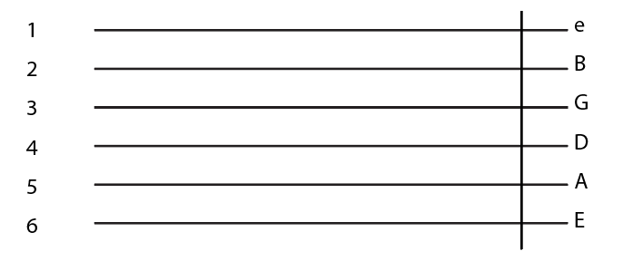

Place guitar on your right leg, so that the curve of the guitar sits
comfortably on your leg.
Drape your right hand on top of the body so that your palm covers the strings
Take your left hand towards the neck and use your thumb as a hook on the back of the neck (the thumb supports the movement of the hand and fingers)
How to hold a pick
Make a pinching gesture with your index and thum fingers. Hold the wider part of the pick in between the two fingers and hold it down.
What is a TAB?
It is an easier visual representation of guitar music that displays exactly where you put your fingers on the fret.
The strings are numbered 1-6 (e-E), and the numbers on the horizontal lines (the strings) represent the fret that should be played.

Let's play!
Use your left thumb to anchor your hand on the neck of the guitar and press each finger one by one on the fret according to the tab.
Make sure when you press the string , you use your finger tips (the area slightly below your nail)
Press down in the middle of the fret for the best sound
Play the same pattern on each string going from top to bottom
How it should sound
How it will sound in the beginning
Why this exercise?
This exercise is the most basic exercise to practice movement of the first three fingers. The fingers should be able to move individually as playing any tune or chords would require varying positions of each finger.
This exercised would loosen up the hand and the progressions of the tune will slowly become faster and much clearer.